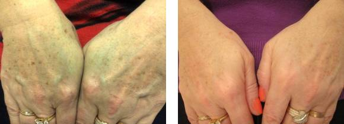
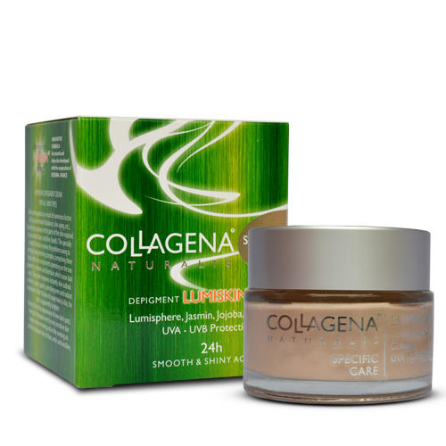
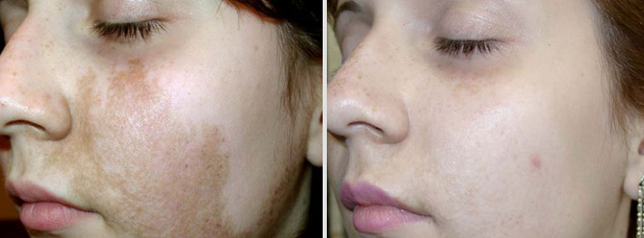
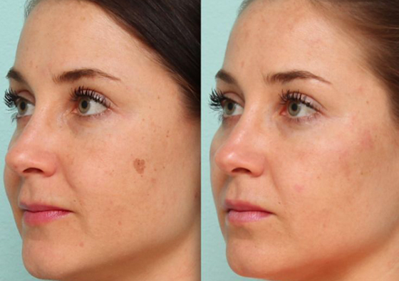
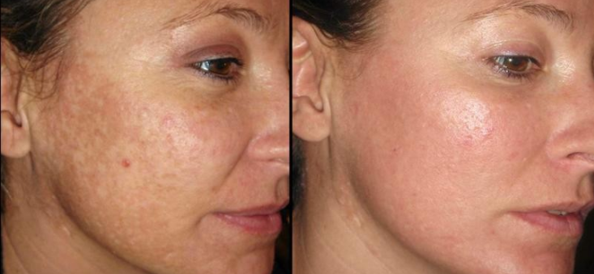
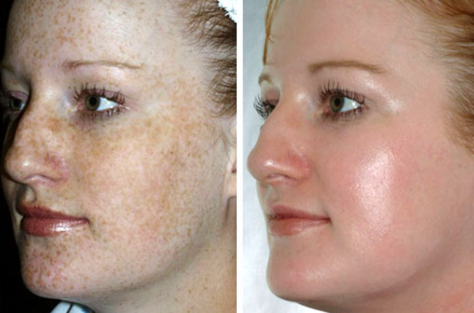

Ja zawsze łatwo dostawałam piegów. Natura dała mi plamy słoneczne i to szczodrze. Chodziłam do szkoły, potem na uniwersytet, pracując, publikowałam zdjęcia na Instagramie i myślałem, że życie jest piękne. I wszystko było w porządku, dopóki nie zrozumiałam strasznej prawdy o sobie.
Tydzień był ciężki w pracy, zakończyliśmy ważny projekt. Czas dobiegł końca, nie mieliśmy więcej czasu, ale w ostatniej chwili wszystko zostało rozwiązane w najlepszy możliwy sposób. Zdecydowaliśmy się świętować z tej okazji - po tym wszystkim, po ciężkiej pracy, aby iść spędzać czas razem w barze. Ponadto, w poniedziałek miałam zaplanowane wakacje - kolejny dobry powód, aby pokusić się na kieliszek dobrego wina.
Jedna z moich koleżanek miał zbyt wiele drinków i zaczął działać całkiem nieprzyzwoicie. Próbowałam przekonać ją, żeby wyhamowała, a nie tańczyła na barze, wiedząc, że będzie się tego wstydzić później, ale ona była bezlitosna.
Moje argumenty i perswazja nie działały. Złapałam ją za ramię, aby spróbować ściągnąć ją w dół, ale ona prychnęła złośliwie i krzyknęła do mnie: „Idź precz potworze, bo odstraszysz wszystkich ludzi”
Szczerze mówiąc, nie spodziewałam się tego od niej. Wszyscy z naszej firmy to słyszeli. Czułam się strasznie niewygodnie i szczerze mówiąc nie rozumiem, dlaczego to powiedziała."Dobrze", pewna dziewczyna, nasz księgowy, postanowiła wyjaśnić sytuację. "Mash, nie powinnaś być na nią zła, wszyscy mamy swoje wady, są bardzo jasno ukazane, ale nawet niepełnosprawni biorą śluby, więc musisz być pewna, że ktoś Cię też lubi.”
Ja nie byłam gotowa na taki szok. Tak, nie mam zwykłego wyglądu, ale co jest powodem obelg? Więc tak, czy ludzie zawsze uśmiechają się do mnie i za moimi plecami dyskutują o moich brzydkich piegach?...
Kompleksy zalały moją głowę, łzy spływały ... I wybiegłam z baru i płakałam całą drogę do domu. Boli mnie bardziej niż ktokolwiek kiedykolwiek zrobił to wcześniej. Jak ja pójdę do pracy? Jak będę patrzeć w oczy tych ludzi? Jak będę patrzyć w lustro?...
Wydawało mi się, że żyłam w otoczeniu oszustwa i zdrady. Dwa dni szlochałam z niesmaku i rozpaczy. Nagle to do mnie się podsunęło i zdecydowałam, że nikt się już nie będzie wyśmiewał. Usunięcie piegów powinno być o wiele łatwiejsze niż utrata 20 dodatkowych kilogramów. Więc zobaczymy, kto w końcu zwycięży!
Ale było znacznie trudniejsze, niż sobie wyobrażałam...
Nawiasem mówiąc, miałam tylko dwa tygodnie wakacji na realizację mojego pomysłu, aby rozjaśnić piegi. Postawiłem sobie za cel, że cokolwiek się stanie, wrócę do pracy bez nich. Koledzy będą wzdychali z zachwytu!
Po przejrzeniu wszystkich rodzajów artykułów związanych z wybielaniem skóry, zrobiłam ogromną listę różnych produktów do spróbowania i procedur do wykonania - wszelkiego rodzaju maski i toniki w domu. Sok z cytryny, natka pietruszki, mleko, płatki owsiane ... Nie było żadnej maski, której bym nie spróbowała ... Wszystkie były absolutnie bezużyteczne- żaden piegi nie zniknął.
Musiałam więc użyć cięższej artylerii. Wzięłam dużą kwotę z konta, na którym oszczędzałam pieniądze na zakup samochodu i poszłam do szpitala, aby usunąć plamki pigmentowe laserem. Wydawało się, że nawet koszt procedury, równy mojej półrocznej pensji nie mógł zmienić moich intencji, ale to się stało...
W holu kliniki poznałam dziewczynę, która miała policzki jakby wpół malowane kredą. Ona była cała w płaczu; powiedziała, że to tylko dlatego, że próbowała usunąć z jej twarzy niewielką cyferkę. Zapewniała mnie, że procedura zakończy się sukcesem i nie pozostanie ani śladu, ale biała plama pozostanie dłużej niż wcześniej. Minęło sześć miesięcy, nic się nie zmieniło.
Najgorsze jest to, że wyglądało to znacznie gorzej niż piegi, i to było praktycznie niemożliwe do usunięcia. To było tak straszne - czy otrzymam taki sam rezultat? Ogólnie rzecz biorąc, nie wykonałam tej procedury.
Próbowałam wszystkich możliwych opcji pozbycia się „pocałunków słońca”, a żaden z nich nie okazał się być sukcesem. Mój nastrój był straszny; siedziałam na samym środku drogi i płakałam tak głośno, że prawdopodobnie cały kraj mnie słyszał. Potem pojechałam odwiedzić moją matkę.
Ja nie chcę zamartwiać ją moimi niepowodzeniami i intencją zmiany wyglądu, ale po prostu nie wytrzymałam i opowiedziałam to wszystko - o żartach w pracy, a także o nieudanych próbach zmiany mojej skóry. Mama była autentycznie zaskoczona, bo była pewna, że nigdy nie dokonam jakiejś dramatycznej zmiany w moim wyglądzie.
Po wielu bezowocnych próbach do przekonania mnie do mojego piękna, mama nagle powiedziała do mnie: „Skoro chcesz pozbyć się piegów, weź moje Collagena Lumiskin. To jest o tym jak udało mi się walczyć z ciemnymi plamami."
I naprawdę, moja mama ma tylko 40 lat, ale niektóre plamy pigmentowe pojawiły się na jej ramionach i denerwują ją strasznie, przypominając o jej starzeniu. Na mój wstyd, nawet nie zauważyłam, że ode zniknęły.
Oczywiście zgodziłam się spróbować kremu. Ponadto, jest on idealny do twarzy, doskonale nawilżający i odżywczy. Ma tylko naturalne składniki, nie zawiera żadnych szkodliwych dodatków chemicznych, parabenów i silikonów. Jestem skłonna do alergii, więc składniki były dla mnie bardzo ważne.
Sądząc po opiniach o Collagena Lumiskin, krem ten radzi sobie z wybielaniem skóry bez problemu. Ponadto ma działanie liftingujące i sprawia, że skóra jest promienna i aksamitna. Doświadczenie mojej mamy wskazuje, że jest również doskonałym środkiem przeciwstarzeniowym, który wzmacnia skórę lepiej niż wiele innych zabiegów kosmetycznych.
Spośród składników mamy nie tylko kolagen, ale także olej jojoba i jaśminu, a to oznacza, że krem jest dobry dla tonowania, pomaga przy trądziku i działa jako ochrona przed słońcem. Wiele osób napisało, że tylko przy użyciu tego kremu mogą zmniejszyć się ślady trądziku, a nawet wyleczyć istniejące problemy z trądzikiem. Tak wiele pozytywnych słów o tym kremie, że byłam bardzo zainspirowana. Po 10 dniach wakacji leczenie dobiegło końca – to było bardzo ważne, że miałam już doskonałą twarz!
Na stronie internetowej, gdzie zamówiłam krem wskazywano, że efekty mogą być osiągnięte w ciągu 30 dni i trzeba używać go rano i wieczorem. Ale zamiast dwa razy dziennie, kładę to na moją twarz co dwie godziny. Wydawało mi się, że pomoże to szybciej osiągnąć wyniki. Rzeczywiście, do końca trzeciego dnia wiele piegników znacznie się zmniejszyło.
Tydzień później, one prawie całkowicie zniknęły. Postanowiłam wziąć jeszcze parę dni więcej do zakończenia leczenia. To zrobiłam!
Moja skóra była bardzo czysta i piękna. Nie mogłam przestać patrzeć na siebie - bardzo podobało mi się ten mój nowy wizerunek. Bo naprawdę, z piegami, byłam jak zwykła dziewczyna, a teraz – jestem prawdziwą księżniczką!
Zaczęłam przyciągać uwagę młodych ludzi, przyjaciele robili mi komplementy, krewni pochwalili mnie za moją odwagę do zmiany. Co pozostało, to zobaczyć reakcję moich koleżanek z pracy - ich postawa wobec mojej transformacji była moją największą obawą.
Ale, jak się okazało, moje obawy były daremne. Pierwszy dzień w biurze był wielkim sukcesem. Marina, która ujawniła mój straszny sekret, szczerze mówiąc upadła na podłogę, kiedy mnie zobaczyła, a ta, którą próbowałam chronić przed wstydem, została zwolniona. Moi koledzy płci męskiej spojrzeli na mnie w zupełnie nowy sposób. Należy zauważyć, że daje to lepszą pewność siebie niż alkohol.
To był prawdziwy sukces i szczęście. Nigdy nie byłam taka atrakcyjna i piękna. Dzięki mojej matce, która zawsze przychodzi mi z pomocą i daje dobre rady.
Mój nowy image radykalnie zmienił moje życie na lepsze. Stałam się bardziej pewna siebie, zmieniłam moje ubrania, i w końcu się zakochałam. Jestem szalenie wdzięczna ludziom, którzy tworzą rzeczy takie jak Collagena Lumiskin. Jeśli masz ten sam problem - piegi, pigmentowane plamy po urodzeniu lub ze względu na wiek, gorąco polecam ten krem. Gdyby mogło to pomóc, to poradziłoby to sobie z jakimkolwiek wyzwaniem.
Powodzenia wszystkim!
Komentarze
Elżbieta19.09.2019
Już wcześniej udało się wybielić moje piegi. Bardzo mi było przykro; Wyglądało to okropnie - garbowane ciało i biała twarz, bardzo ostre przejście.
Dyta 21.09.2019
Kolagen Lumiskin wybiela tylko pigment, ale nie całą skórę, więc nie będzie takich problemów.
Lesława 25.09.2019
Dyta, czy ta informacja jest dokładna?
Dyta 05.10.2019
Lesława, tak. Moja siostra i ja używałyśmy tego kremu, a potem jej przyjaciółki również spróbowały - żadnych skarg. U mnie redukuje to piegi bez problemu.

Irenka 05.10.2019
Spędziłam ponad miesiąc nad morzem. Tam nie można nosić makijażu, a ja jestem zmęczona używania tylko masek wybielania. Spróbuję Lyumiskina. Mam nadzieję że to pomoże.
Teodozja 10.10.2019
proszę mi powiedzieć, a efekty są tymczasowe czy plamy znikają całkowicie?
Lidia 14.10.2019
O piegach - Nie wiem, mogą pojawić się ponownie na wiosnę. Brązowe plamy, które pojawiają się ze względu na czynnik wieku, a nie ze słońca, znikają prawdziwie.
Danuta 15.10.2019
Próbowałam laserowego usuwania. Naprawdę nie pomogło. Jakby pierwsze 2-3 miesiące piegów wydają się być lżejsze, ale potem wróciły, a latem tego roku były jeszcze wyraźniej zauważalne.
Alicja15.10.2019
i mam ten sam problem, nie mogę spojrzeć na siebie w lustrze, ((((((
Zuzanna 17.10.2019
Po porodzie to pojawiło się na mojej twarzy. Próbowałam peelings i maski – są bezużyteczne. Teraz używam Lumiskina, efekt jest już widoczny.

Władysława 17.10.2019
a skóra tym sposobem nie będzie uszkodzona? Po prostu zastanawiałam się, gdy miałam ciemne plamy po raz pierwszy pod nosem, które wyglądały jak wąsy :)))
Grażyna 18.10.2019
Przy użyciu domowych, środków możliwe jest uszkodzenie skóry. Z tym kremem to jest niemożliwe. Mam bardzo wrażliwą skórę, była doskonale wybielona i wygląda bardzo dobrze.

Ruta 20.10.2019
Miałam twarz prawie jak uzależniona od heroiny. Collagena Lumiskin poradził sobie z tym zadaniem. Jednak trwało to około miesiąca

Zostaw komentarz